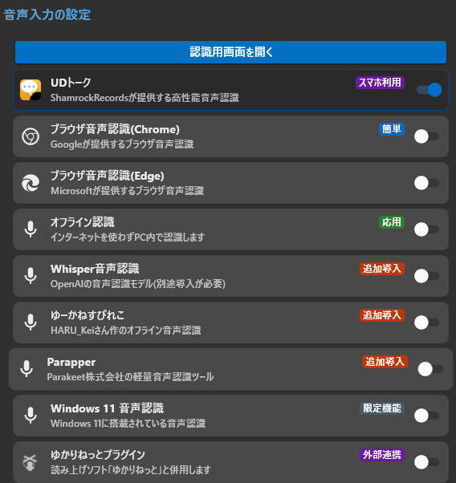
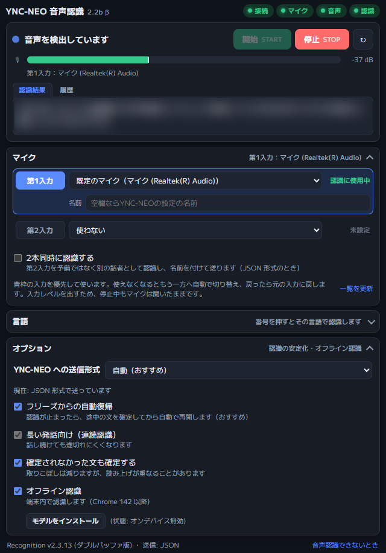
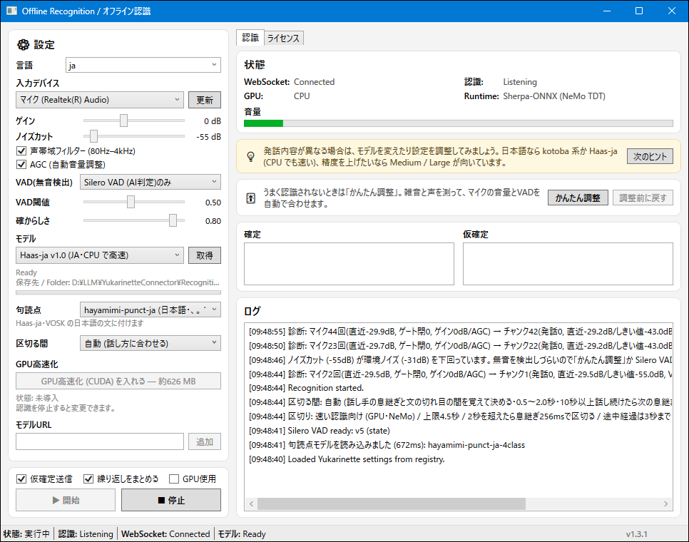
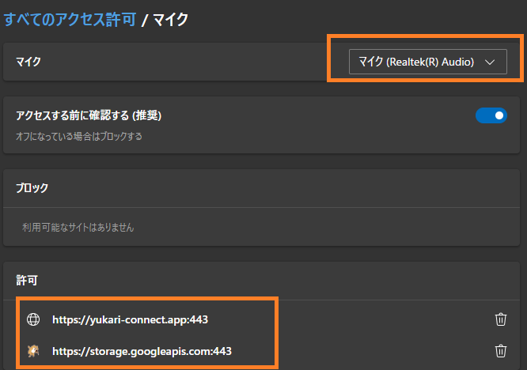

音声認識がうまくいかないときの解決法¶
ゆかコネNEO v3.0 のドキュメントです。v2.3 をお使いの方は v2.3 版のこのページ を、違いを知りたい方は v2.3 から v3.0 への移行 をご覧ください。
このページについて
音声認識機能がうまく動かないときに、原因を特定して解決するためのガイドです。よくあるトラブルを順番に確認していきましょう！
マイクが認識されない
ブラウザのマイク設定を確認する方法
音声が正しく拾われない
音量レベルの調整方法
ブラウザを変更したい
別のブラウザで試す方法
「接続中」のまま止まる
Chromeの接続の許可を確認する方法
オフライン認識を使う
モデルの選び方・句読点・文の区切り・保存先
ブラウザ音声認識について¶
ブラウザ音声認識は、ブラウザに搭載されている音声認識機能を使って、あなたの声を文字に変換するシンプルな方法です。使うブラウザによって、次の2種類から選べます。
| 選択肢 | 使われる音声認識 |
|---|---|
| ブラウザ（Chrome / Google音声認識） | Googleの音声認識 |
| ブラウザ（Edge / Microsoft音声認識） | Microsoftの音声認識 |
- どちらもインターネット接続が必要です。
- 認識の癖が違うので、片方でうまくいかないときはもう片方を試してみてください。

ブラウザ音声認識の画面でできること¶
使用条件
- ゆかコネNEO v3.0.0～
- マイクを選ぶ機能は Chrome / Edge 135 以降
「認識用画面を開く」で開く音声認識画面では、ブラウザの設定を開かなくても、使うマイクを選んだり入力レベルを確かめたりできます。

この画面が出ないとき
「音声の入れ方」の「オプション」で 「SpeechRecognitionWebをつかう」 が ON のときは、別の作者の認識ページが開きます。この画面を使うときは OFF にしてください。
マイクを選ぶ¶
- 画面の 「マイク」 の欄で、第1入力（優先して使うマイク）と 第2入力（予備）を選びます。新しくつないだマイクが出てこないときは 「一覧を更新」 を押します。
- 青枠の入力を優先して使います。使っているマイクが抜けたり使えなくなったりすると、もう一方 → OS の既定のマイク の順で自動で切り替え、元のマイクが戻ったら話の切れ目で元に戻します。
- 第1入力で 「標準設定マイク（従来どおり）」 を選ぶと、以前と同じく、どのマイクを使うかをブラウザに任せます（このときは入力レベルを表示しません）。
- マイクを選べないブラウザでは「このブラウザではマイクを指定できないため、「標準設定マイク（従来どおり）」で認識します」と出ます。
- マイクの指定がうまくいかずに既定のマイクへ切り替わったあとでも、認識を停止すれば選び直せます（v3.0.9～）。
Edge でマイクを選ぶとき
Edge では、選んだマイクが認識に使われないことがあります。文字にならないときは、第1入力を「標準設定マイク（従来どおり）」に戻してください。
入力レベルと状態の表示¶
- 入力レベルのメーターで、声が届いているかを確かめられます。入力レベルを出すため、停止中もマイクは開いたままです。
- 上の 接続・マイク・音声・認識 のランプで、どこまで動いているかが分かります。お知らせは時刻つきで表示されます。
- マイクの入力が完全な無音のまま 8 秒続くと、「マイクの入力が完全に無音です。」と警告が出ます。マイクのミュートや OS の録音設定を確認するか、「マイク」の欄で別の入力に切り替えてください。
2人分を同時に認識する¶
- 「2本同時に認識する」 を ON にすると、第2入力を予備ではなく別の話者として同時に認識します。第2入力には 名前 と 言語 を別に設定できます。
- 送信形式が JSON 形式のときだけ使えます（下の「送信形式」を参照）。
- 第1入力と同じマイクを第2入力に選んでいると動きません。ブラウザによっては2本同時に動かせないことがあり、その場合は自動で1本に戻ります。
送信形式¶
- 「オプション」の 「YNC-NEO への送信形式」 で、ゆかコネNEO へ文字を送る形を選べます。ふつうは 「自動（おすすめ）」 のままにしてください。
| 選択肢 | 意味 |
|---|---|
| 自動（おすすめ） | ゆかコネNEO が対応していれば JSON 形式、そうでなければ従来形式で送ります |
| JSON 形式 | 文ごとに ID・話者・言語を付けて送ります。2本同時の認識はこの形式のときだけ使えます |
| 従来形式（ゆかりねっと互換） | 以前と同じ形で送ります |
そのほかのオプション¶
「オプション」の欄には、送信形式のほかに次のチェックがあります。
| 項目 | 意味 |
|---|---|
| フリーズからの自動復帰 | 認識が止まったら、途中の文を確定してから自動で再開します（おすすめ） |
| 長い発話向け（連続認識） | 話し続けても途切れにくくなります |
| 確定されなかった文も確定する | 取りこぼしは減りますが、読み上げが重なることがあります |
| オフライン認識 | 端末内で認識します（Chrome 142 以降）。「モデルをインストール」 で認識のモデルを入れます。横に今の状態が出ます |
ゆかりねっと向けの認識ページ
ゆかりねっとと組み合わせるときに使うブラウザ音声認識のページにも、同じマイク選択・入力レベル表示が入っています。
ブラウザ音声認識が「接続中」のまま止まる（Chrome）¶
使用条件
- ゆかコネNEO v3.0.9～（案内の表示）
- 新しい Chrome では、Web のページ（音声認識画面）からこの PC のアプリ（ゆかコネNEO）へつなぐときに、「このデバイス上のアプリ」「ローカル ネットワーク」へのアクセスの許可を求められます。許可しないと、認識した文字がゆかコネNEO に届きません。
- 音声認識画面に 「ゆかコネNEO への接続を許可してください」 と出たら、ブラウザの上のほうに出ている確認で 「許可」 を押してください。
- 「ゆかコネNEO への接続がブラウザに止められています」 と出たら、一度「ブロック」を選んでいます。次の手順で許可に変えてください。
- アドレスバーの左にあるアイコン（サイト情報）を押します。アドレスバーがないウィンドウのときは、ふだんのブラウザの「設定 → プライバシーとセキュリティ → サイトの設定」で
https://yukari-connect.appを開いても変えられます。 - 「このデバイス上のアプリ」または「ローカル ネットワーク」を 「許可」 にします。
- 許可すると自動でつなぎ直します。つながらないときは、F5 キーでページを読み直してください。
- アドレスバーの左にあるアイコン（サイト情報）を押します。アドレスバーがないウィンドウのときは、ふだんのブラウザの「設定 → プライバシーとセキュリティ → サイトの設定」で
- 確認が出ていないのにつながらないときは、ゆかコネNEO が起動しているかを確かめてください。
オフライン音声認識について¶
上のタブ 音声と翻訳 → 音声の入れ方 で 「オフライン認識」 を選ぶと、インターネットを使わずにPCの中で認識します。「認識用画面を開く」で、オフライン認識の画面（Offline Recognition）が開きます。

モデルを選ぶ¶
- 画面の 「⚙ 設定」 の 「モデル」 で、認識に使うモデルを選びます。モデルは「高速 (Fast)」「バランス (Balanced)」「高精度 (High accuracy)」「日本語調整 (Japanese tuned)」「VOSK」「Sherpa-ONNX」に分かれて並んでいます。
- 日本語向けには次のモデルがあります。
| モデル | 特徴 |
|---|---|
| Haas-ja v1.0 (JA・CPU で高速) | 日本語専用の軽量モデル（v3.0.10～）。GPU が無い PC でも速く、同じ言葉の繰り返しが出にくいモデルです |
| kotoba-v2.0 Q5 (JA) | 日本語向けの Whisper（約 540MB）。v3.0.10 で、認識精度が下がっていた件を直しました |
| kotoba-bilingual Q5 (JA/EN) | 日本語と英語の両方向け（約 540MB） |
| [VOSK] Small Japanese (48MB) など | 小さく軽いモデル |
モデルのダウンロードと同意¶
使用条件
- ゆかコネNEO v3.0.1～
- まだ PC に無いモデルを選んで開始する（または「取得」を押す）と、ダウンロードしてよいかの確認が出ます。
- 確認には、モデルの名前・取得元・大きさの目安・保存先が表示されます。「はい」 を押すとダウンロードが始まります。
- 「いいえ」 を押すと、ダウンロードせず、認識も開始しません。既定のボタンは「いいえ」なので、Enter を押しただけでダウンロードが始まることはありません。
- モデルのライセンスは、画面の「ライセンス」の一覧で確認できます。
- モデルの保存先を C: 以外に変えたり、要らなくなったモデルを消したりするときは、ゆかコネNEO 側の 「モデルの保存先と管理」 を使います（オプション設定項目 を参照）。オフライン認識の画面が開いているあいだは、認識のモデルを削除・移動できません。
句読点を付ける¶
使用条件
- ゆかコネNEO v3.0.11～
- 「⚙ 設定」 の 「句読点」 で、確定した文に「、」「。」「？」を付けるかを選べます。
| 選択肢 | 意味 |
|---|---|
| 付けない (モデルの出したまま) | 既定です。モデルが出した文をそのまま使います |
| hayamimi-punct-ja (日本語・、。？) | 句読点を付けるモデルで、日本語の文に句読点を補います |
- 句読点が付くのは、Haas-ja と VOSK のモデルで認識した、まだ句読点の無い日本語の確定文だけです（Whisper 系のモデルはもともと句読点を付けて出します）。
- 初めて選んで開始するときに、句読点のモデル（約 44MB）をダウンロードしてよいかの確認が出ます。
ゆかコネNEO 側の「AIモデルで句読点を打ちこむ」とは使い分けます (v3.0.17～)
- ゆかコネNEO の「音声の入れ方」→「オプション」にも、句読点を打ちこむ設定があります（音声入力の設定）。
- 句読点が二重に付かないよう、音声の入れ方に「オフライン認識」を選んでいるあいだは、ゆかコネNEO 側の設定は OFF になり、欄も出ません。オフライン認識では、この画面の「句読点」を使ってください。
- ほかの入れ方に戻しても、ゆかコネNEO 側の設定は自動では ON に戻りません。使うときは入れ直してください。
文を区切る間¶
使用条件
- ゆかコネNEO v3.0.18～
- オフライン認識は、話し手が黙った間（息継ぎや文の切れ目）を見て、1 文ずつ確定します。細かいフレーズに割らずに文のまとまりで出すので、翻訳しやすくなります。
- 「⚙ 設定」 の 「区切る間」 で、文の切れ目とみなす間の長さを選べます。実行中でも切り替えられます。
| 選択肢 | 意味 |
|---|---|
| 自動 (話し方に合わせる) | 既定です。話の途中の息継ぎと、文の切れ目の間の長さを覚えて、その境目で区切ります（0.5〜2 秒） |
| 0.25 秒 / 0.5 秒 / 0.75 秒 / 1 秒 / 1.5 秒 / 2 秒 | この長さだけ黙ったら、そこで文を確定します。これより短い息継ぎでは区切りません |
- 息継ぎで文が割れるなら長く、字幕を早く出したいなら短くしてください。
- 長い文は、中で区切りながら続けて認識します（音声は落としません）。1 回に認識する長さの上限（GPU 約 4.5 秒・CPU 約 6 秒）で切っても、黙るまでは 1 つの文として確定します。
- 10 秒以上話し続けて確定しないときは、次の息継ぎで確定します（字幕がいつまでも出ないのを防ぐため）。
- 0.25 秒を選んでいても、認識が追いつかずに待ちがたまっているあいだは 0.5 秒で区切ります。
v3.0.17 の「確定までの最長」を使っていた方へ
v3.0.17 で足した「確定までの最長」（自動・2〜5 秒）は、v3.0.18 で「区切る間」に置き換わりました。意味が違うため、設定は引き継がず「自動」から始まります。
文が途中で切れる・つながりすぎるとき
- 1 文の途中で確定してしまう（ゆっくり話す・間を置きがちな方）は、「区切る間」を自動より長い値にしてみてください。
- いくつもの文がまとめて 1 つになる（間が短い・早口の方）は、短い値にしてみてください。
- 自動は、間の長さが大きくばらつく話し方だと長め（2 秒）に寄ることがあります。そのときも数字で選んでください。
文ごとの言語の判定と、繰り返しのまとめ¶
- 「言語」を 「自動検出 / Auto detect」 にしていると、確定した文ごとに話した言語を推定して ゆかコネNEO に知らせます。短い文での判定違いを避けるため、同じ言語が続いてから切り替えます（VOSK のモデルでは判定しません）。
- 「繰り返しをまとめる」（既定 ON）で、同じ言葉が何度も出る誤認識をまとめます。「テスト、テスト、テスト」のように実際に繰り返した言葉は残します。
- Whisper 系のモデル（kotoba など）が、前の文とほぼ同じ文を音声の長さに見合わないほど出したときは、誤認識として捨てます（v3.0.18～）。
ウィンドウの位置と大きさ¶
使用条件
- ゆかコネNEO v3.0.15～
- オフライン認識の画面は、位置と大きさを覚えて、次に開いたときに前と同じ場所に出ます。
- ディスプレイの拡大率や解像度が変わったときは、画面に収まるように直して出します。
- そのディスプレイが無いときや、SHIFT キーを押しながら開いたときは、既定の位置に出ます。
よくある問題と解決法¶
マイク設定の確認¶
ブラウザのマイク設定画面を開く
ブラウザのアドレスバーに以下のいずれかを入力します：
- Microsoft Edge:
edge://settings/content/microphone - Google Chrome:
chrome://settings/content/microphone
正しいマイクを選択する
使いたいマイクが選択されているか確認します

ブラウザが許可状態か確認する
「ブロック」になっていると音声認識ができません。必ず「許可」にしましょう。
音声認識画面でもマイクを選べます
ブラウザの設定を開かなくても、音声認識画面の「マイク」の欄で使うマイクを選べます（Chrome / Edge 135 以降）。 → ブラウザ音声認識の画面でできること
音量調整¶
音量が適切でないと、認識精度に大きく影響します。
音量調整のポイント
- 音量が小さすぎる場合：認識されない、結果が不明瞭、認識の確定が遅れる
- 音量が大きすぎる場合：音が割れて認識精度が下がる、認識結果が表示されないことも
Windows 10/11での音量確認方法¶
- タスクバーの音量アイコンを右クリック
- 「サウンド設定を開く」を選択
- 「入力」メニューで使用するマイクを選び、音量レベルを確認
- レベルメーターが話しているときに中間くらいまで動くのが理想的です
ブラウザの変更¶
ブラウザによって音声認識の精度や安定性が異なることがあります。
別のブラウザで試す
現在のブラウザで問題がある場合は、別のブラウザに切り替えてみましょう
- Microsoft Edge → Google Chrome
- Google Chrome → Microsoft Edge
認識に使うブラウザを変更する
音声認識に使うブラウザは「音声入力の設定」画面で切り替えます
- 左メニューの「音声入力の設定」を開く
- 「ブラウザ（Chrome / Google音声認識）」か「ブラウザ（Edge / Microsoft音声認識）」を選ぶ
- 音声認識ウィンドウを開き直す
「ブラウザと字幕ウィンドウ」画面とは別の設定です
- 「ブラウザと字幕ウィンドウ」画面（以前の「ブラウザのオプション」）にあるChrome / Edgeの選択は、字幕を表示するために使うブラウザの設定です。音声認識には影響しません。
- 音声認識に使うブラウザは「音声入力の設定」画面（上のタブでは「音声と翻訳」→「音声の入れ方」）で選びます。ここを間違えると、いくら切り替えても認識の挙動が変わりません。
その他のよくある問題¶
認識はされるが非常に遅い場合¶
考えられる原因と対策
- 静かすぎる環境：少し大きめの声で話してみる
- PC負荷が高い：他のアプリを閉じてみる
- インターネット接続が不安定：接続状態を確認する
特定の単語や専門用語が認識されない場合¶
「辞書」プラグインを使うと、特定の単語や専門用語の認識精度を高めることができます。
それでも解決しない場合¶
Windows の設定を確認する
Windows自体のマイク設定に問題がある可能性があります
- Windowsの「設定」→「システム」→「サウンド」を開く
- 「入力」セクションでマイクがデフォルトデバイスになっているか確認
- 「デバイスのプロパティ」でマイクのアクセス許可を確認
デバイスドライバーを確認する
特に外付けマイクを使っている場合は、ドライバーが最新かチェックしましょう
困ったときは
上記の方法を試しても解決しない場合は、ヘルプが欲しいときのページで詳しい問題解決方法を確認できます。